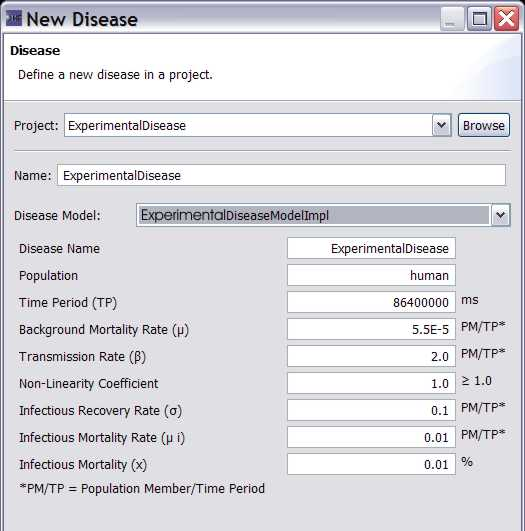
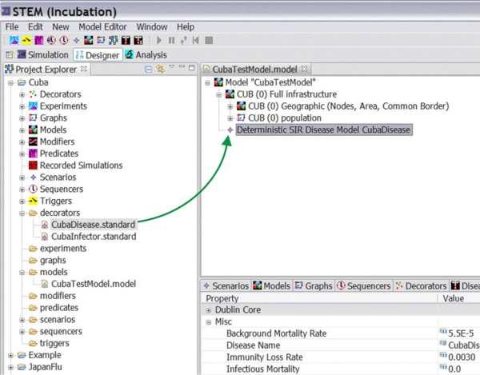

1) On the menu bar click ->new->new disease
2) This will launch the Dialog shown in Figure 1. Fill in the Name: (ExperimentalDisease)
3) Fill in the Disease Name: You can use the same name you used in (2) (ExperimentalDisease)
4) Select the DiseaseModel in the ComboBox: e.g., select "ExperimentalDiseaseModelImpl"
At this point you should also edit or set any of the disease parameters (i.e.
Transmission Rate, Recovery Rate, etc).
If you don't want to do it now it will also be editable any time after the
scenario is created.
|
 |
|
Figure 1: The new Disease Dialog. |
5) Fill in any Dublin core data you want to add
6) Click finish
7) Under decorators you should see ExperimentalDisease.standard
8) Double click on MODELS in the project explorer. You should see "CubaExperimentalDisease" in the Resource Set.
9) DRAG your new disease (e.g., CubaExperimentalDisease.Standard) from decorators (in the project explorer window) into the model "CubaExperimentalDisease" in the Resource Set window. Expand the "CubaExperimentalDisease" in the Resource Set window to see that it worked. See Figure 2.
|
 |
|
Figure 2. Drag the Disease Model (decorator) into the Model in the Resource Set. |